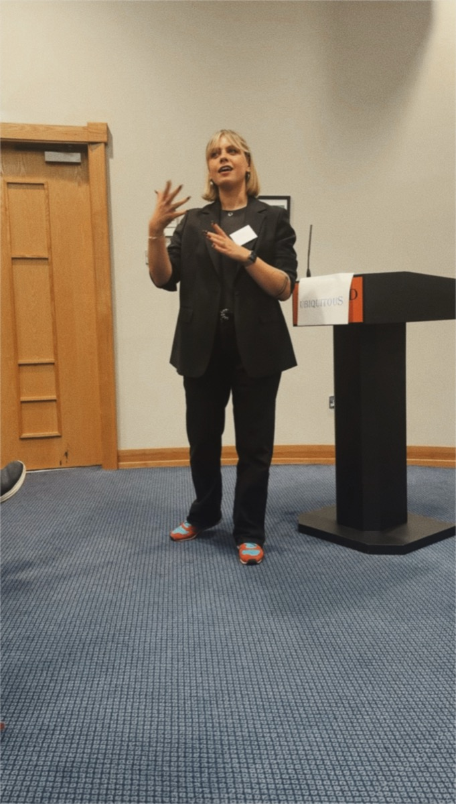
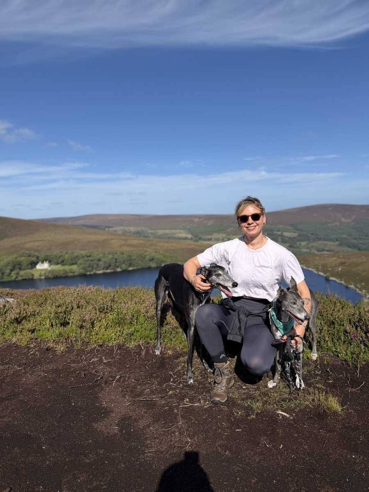
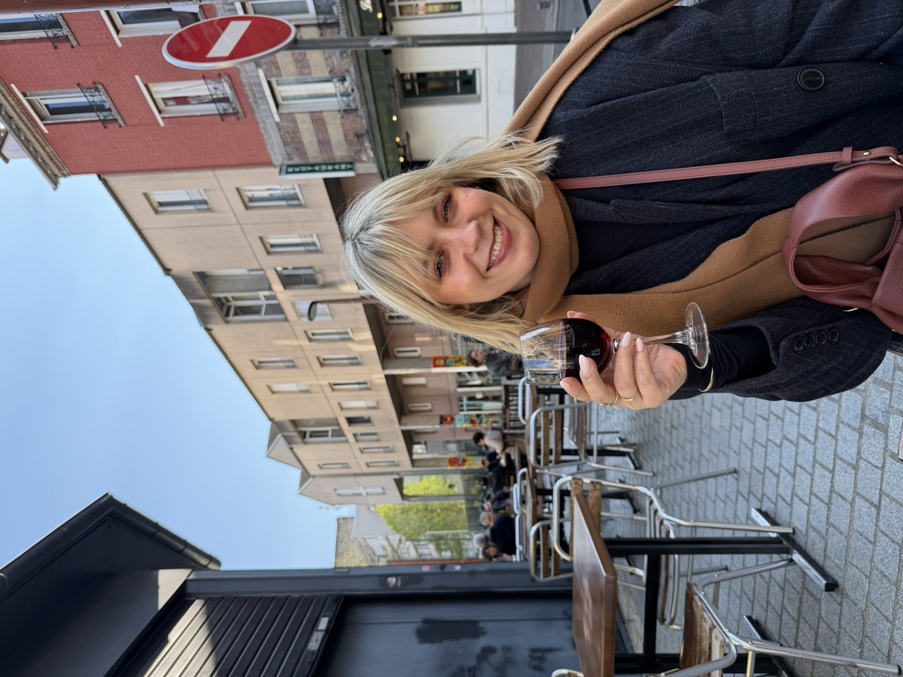
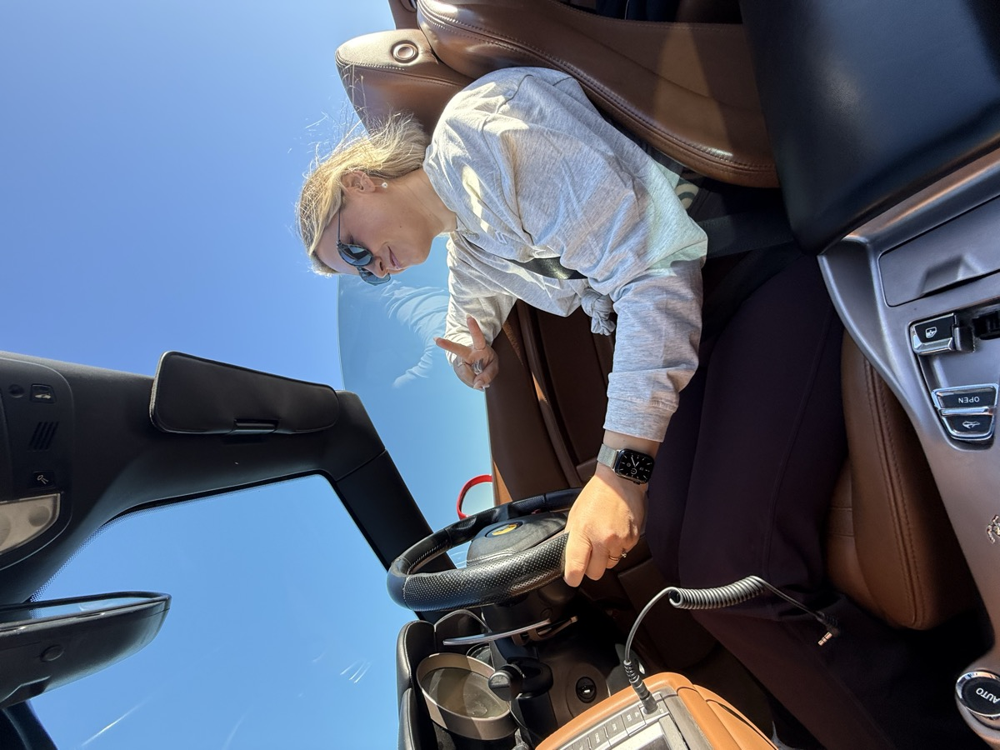
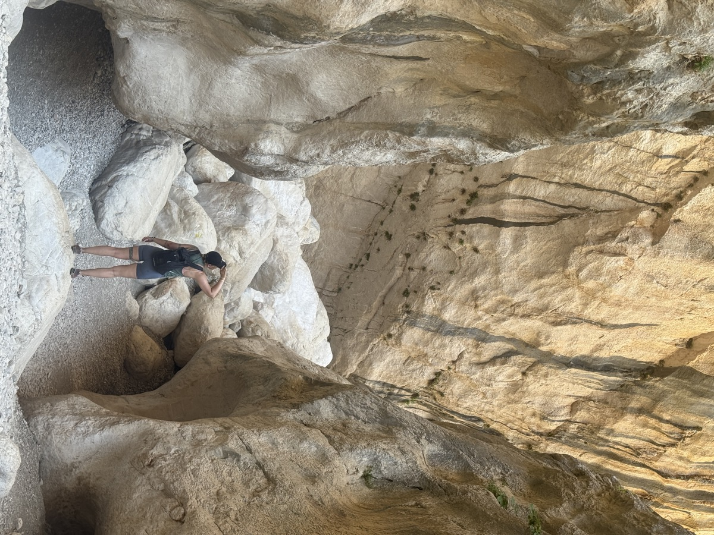

Hi, I'm Egle (Egg-leh).
Dublin-based coach. I spent 16 years in tech as a designer, product manager, head of design and startup founder, then retrained. Now I coach leaders at tech companies, and people deciding what's next.

| Role | Leadership coach |
|---|---|
| Based in | Dublin, Ireland |
| Background | 16 years in tech: UX, product, head of design, startup founder |
| Qualified | Diploma in Mentoring and Coaching Professional Diploma in Leadership and People Management |
| Focus | New-leader coaching for tech companies Career and leadership decisions for individuals |
| Outside work | Two rescue dogs, heavy weights, hikes, a house renovation |
How I became a coach
Throughout my career, people kept finding me.
Not for my product decisions. For something else. Colleagues would show up at my desk, message me late, or grab me after a meeting. How do I ask for more money? How do I handle this manager? Should I take this role or that one? I'm thinking of leaving. What would you do?
I'd listen. Ask the thing they hadn't thought to ask themselves. Help them see what was already there.
A few months after one of those conversations, a colleague called me. She'd got the promotion. The salary. Everything we'd talked about had worked. She was ringing to say thank you.
I had butterflies in my stomach. And I thought: this is what I should be doing.
Then I built a startup. It was everything I thought I wanted: founder, CEO, the pitch, the whole thing. Until it wasn't. I burned out. Quietly. While still delivering.
So I retrained as a coach. Turns out I'd been doing it for years anyway, just without the title.
What it's like to work with me
I'm direct. I'll tell you what I see, not what you want to hear. I'll ask the thing nobody else has thought to ask. And I'll push you, because nothing changes inside your comfort zone.
It's like having someone in your corner.
Currently curious about
- AI, obviously. Who do you think designed this website? Me, myself and AI.
- Tiny apps and experiments. I build them.
- Speaking. I'm in a local Toastmasters club because AI won't speak for us, and because I coach people about leaving their comfort zone, so I should be out of mine.
Outside the job titles
- I lift heavier than you.
- Two rescue pups: one greyhound, one whippet mix.
- I'm a nerd. Tell me what you're building and how.
- Food and wine, ideally together.
- We're renovating our home, so ask me about solar panels and heat pumps.
Let's talk.
If you want someone in your corner who has done the job, let's talk.
Book a call



